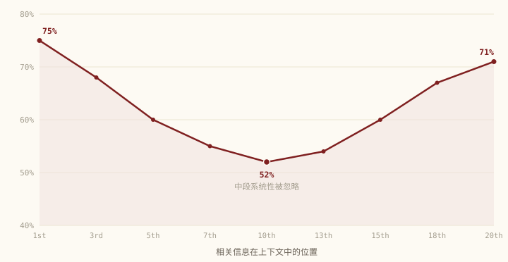

Multi-Agent 协作的调性与瓶颈
在更新迭代 Multi-Agent-Research skill 的这段日子里，我时常花很多时间和 claude 进行对话。基于 claude code 的 harness 框架进行对话，算是做了一次比较有意思的尝试。写下这篇文章，算是对这个阶段性的成果进行总结。
3 月第一次在小红书听到晓辉博士谈到：她用 Multi-Agent 组建了一个 Agent team，然后各个专家 Agent 各司其职，产出了一份结构清晰、极具深度的研究报告。Agent 在做好任务规划后，竟然时间上花了 2 个小时，而不间断。于是也向自己提问，埋下了种子。
如今 skill 已经迭代到 v9.4 版，用框架产生的报告，回应了我生活中诸多的疑问。过去要在网页上无数次点击、汇总才能得到的答案，现在用一个 skill 加一个目标约束，大概二十多分钟就能深度拆开。
作为独立开发和使用者，也无比欣喜。
我也在渐渐接近那个问题——实现「知识平权」。于此，回望，反思。
我想，多 Agent 的价值不止在「并行」，在「综合层」；我们的框架真正对抗的，不是「任务完成效率」，是「AI 自欺太容易」。而对抗它的办法，我后来想明白，不是去「筛」出一个对的答案——是反过来，把「我以为对了」的地方一层层剥掉。逼近真相，从来是一个下降的过程，不是过滤的过程。
一关键约束放在哪，比怎么写更重要
在迭代的时候，我发现的第一个有意思的现象是：模型会面临「Lost in Middle」的问题，也就是模型会系统性忽略长 prompt 中段的信息，对于提示词首尾的信息的留存率是更高的，所以在设计提示词的时候，关键的约束的放置位置是相对重要的。

把同一条硬约束（「每个结论必须附可查来源」）放在 prompt 不同位置试。放中间，合规率几乎是 0，跟没看见一样；原样挪到开头或结尾，100% 执行。一个字没改，只动了位置。
2024 年，斯坦福的 Nelson Liu 等人有一篇研究专门讲了这个现象：当相关文本位于开头（首因效应）或结尾（近因效应）时，准确率很高；而当它位于中间位置时，准确率则明显下降。
这其中有 Transformer 的注意力机制偏向边缘的问题，还有一个解释是因为大模型的训练数据是基于我们人类创作的数据，于是 LLM 分析逻辑时会学习输入信息源的模式。LLM 就像人类一样，偏向阅读首尾的总结段——也正是我们时常认为一篇文章重要的位置。
但是「Lost in Middle」目前我探索的边界仅限于 claude code 的框架中，是否未来更换一套 harness 框架，或者当更新一点的模型出现，是否一切就会有变化？
但是我相信模型看见的区间会挪动，1M 上下文、1.5M 上下文，未来的上限无限。面对变化，我们更应该是更新迭代现有框架，让架构更宽容，保留下一个结构的更新可能。让迭代成为常态，为模型配置更好架构。
约束放对，只是让单个 agent 别犯错；可单个 agent 再小心，也有它自己看不见的盲区——这就是下一节要说的，为什么需要多 agent。
二多 Agent 的价值在综合层，不在并行
这个话题反思的起点，是 skill 阶段性定稿后，我让 claude 用苏格拉底提问法向我提问 skill 的内容。claude 问我：多 agent 到底优点在哪，除了已知的拆分提升效率，还有什么是更重要的？
我记得在创建这个 skill 的时候，我理解的多 agent 的价值在于，对于很复杂的任务，我们可以把一个问题拆分成好几个子问题，然后任务的开发效率就能快速提升。
但是随着框架演进，skill 对于多 agent 演变的要求其实很快就从关注效率的提升，到讨论最终的研究报告，到底会因为多 agent 协作的形式提升哪些方面？
2026 年 4 月，斯坦福的 Dat Tran 和 Douwe Kiela 发表一篇预印本，专门做了一件以前没人严格做的事：把「思考 token 预算」固定住，让单 agent 和多 agent 花一样多的算力，再去比谁答得准。结论是——在多跳推理任务上，单 agent 持平甚至好过多 agent。而且他们给了一个很硬的理由：每多一次 agent 之间的交接（handoff），信息只会损失、不会增加。这是信息论里的数据处理不等式（DPI），不是经验观察。所以一条很长的多 agent 链路，从信息论上讲就是先天吃亏的。
读到这里我一度很困惑：如果单 agent 在等成本下本来就更强，那我们为什么还要用多 agent？
但是我后来觉得，单纯比较「等 token 预算下谁更深」这件事本身是有问题的。如果一个 agent 用了更多 token，说明它推理得更深；而预算被压缩的多个 agent，推理可能还停留在表面。真正公平的比较，应该是让几个 agent 各自都获得充分的深度推理，再去和单 agent 比——而不是把多 agent 的总预算切成几份。
论文作者其实也回应了这一点。他们的论点并不是「多 agent 永远不如单 agent」，而是一个更精确的声明：在相同 token 预算下单 agent 更优；但当 context 被降级、或者愿意投入更多算力时，多 agent 会重新变得有竞争力。作者 Tran 自己的总结是：如果瓶颈是推理深度，单 agent 通常就够了；如果瓶颈是 context 碎片化或降级，多 agent 才更有防御价值。
这恰好把整场争论从「谁更好」挪到了「边界在哪里」。于是轮到我设计 skill 的时候，我做的事情其实就是让它站在「多 agent 有优势」的那一侧——而要站得住，就得先说清楚单 agent 到底差在哪。我自己想下来，主要是两件结构性的短板。
第一件是 context。研究任务的 context 需求通常远超单 agent 能干净处理的容量——大量文献、跨领域对比，单 agent 很快就触碰上 Lost in Middle 效应，前面搜到的关键数据，等到写报告的时候已经被遗忘了。
第二件更根本：我认为多 agent 不只是在「推理」层面更深入，它还在做单 agent 结构上做不到的事。一个 agent 无法真正质疑自己的结论（agent 有自评偏差，对于自身创作的内容习惯性的接受度更高），也无法发现自己跨板块的口径矛盾（因为它根本看不见别人写了什么）。
当然，多 agent 也不是没有代价的——拆成几个 agent，就意味着要对齐它们的口径、交接彼此的产出、还要等慢的那个跟上，这些来回的开销是单 agent 根本不需要的。所以问题从来不是「多就是好」，而是「多带来的好处，到底值不值这些代价」。
那多 agent 凭什么能让好处盖过代价？答案就在复盘时 claude 追问我的那个问题——主 CC（也就是全程在线的 claude code 主线程）做的事情为什么是熔合，而不是简单的拼接？
是因为真正做研究，就是基于零碎的信息，产出零碎信息之下更有深度的内容。拼接丢掉的最大的东西，是跨板块的洞察。比如 Expert A 发现「习惯养成需要 66 天」，Expert B 发现「环境设计可以缩短行为改变周期」。单独看各自都完整，但只有把它们放在一起，才能产生一个新结论：「环境设计可能是缩短 66 天养成周期的杠杆」。这个洞察不存在于任何一个 Expert 的报告里，它只能在综合的时候被创造出来。
这就是「熔合」——不是把已有的东西排列在一起，而是从已有材料中发现新的东西。
所以我才慢慢想明白，多 agent 本质上不是「推理深度」的问题，是「认知结构」的问题。文献说「不要默认用多 agent」，而 skill 其实是在判定「在这些特定条件下，多 agent 的收益超过了协调成本」。它把「举证责任」压到了多 agent 这一边——你不能默认多就是好，你必须说清楚这个任务为什么需要多 agent。
多 agent 真正不可替代的价值，不在于「做得更快」——并行省下来的那点效率，前面也说了，很大一部分又被对齐、交接、等待这些开销抵掉了，它只是个会打折扣的附带收益。多 agent 真正的价值，在于能做到单 agent 做不到的事：用独立的视角质疑已有结论，用横向穿透发现隐藏矛盾，用真正的融合产生跨板块的新洞察。这不是效率的提升，是认知能力的扩展。
效率是多 agent 的副产品，不是它存在的理由。它存在的理由，是认知结构上的不可替代性。
三质量怎么被保住：独立性逐层递进
上面说到单 agent 有两个结构性盲区——质疑不了自己、看不见别人写了什么。那 skill 是怎么把这两个洞补上的？答案就是流程里专门设的两个角色：QR 和 Evaluator，一个做横向穿透，一个做独立盲审。
其实在回顾整个 skill 的迭代过程时我意识到，即使作为 skill 的参加者，我对它的完整演变仍旧是了解得不充足的——QR 和 Evaluator 这两个角色到底怎么分工、为什么非得分开，也是我在那场苏格拉底式提问里被反复追问，最后才真正理清的。
先说 QR。它横跨所有板块工作：在专家 agent 完成各自任务之后，QR 把所有子 agent 的产出横着读一遍，理清跨板块口径不统一、互相矛盾的地方，做事实核验，并直接修掉其中的严重错误（P0），最后产出一份审计报告。这里要强调一句——QR 不写新的研究内容，也不负责把各板块汇总成文，那是后面主 CC 熔合时干的事。QR 是审稿人，不是作者。
但 QR 自己也有一个躲不掉的问题。正因为它在这一步既评又改（亲手修复了报告里的错误），它对报告就产生了一种「所有权」：等它改完，再让它回头评价整份报告的质量，它会天然倾向于认为「我改过的地方都改对了」。这就是自评偏差——做过的人，反而最不客观。
所以最后还需要一个 Evaluator，来做交付给用户之前的终裁。它的独立性建立在两条铁律上。其一是只评不改：它从头到尾不碰报告内容，只产出评分和修复指令，让别人去改。其二是故意不读 learning-log 和 learning-history——它不去看 skill 历史上沉淀下来的那些规范，是为了不让自己掉进「这份报告符不符合规范」的角度里去评；它要评的是更根本的东西：这份报告的证据链本身，站不站得住脚。一份报告可以完美符合所有规范，论证逻辑却仍然有漏洞，而 Evaluator 要抓的，正是后面这种。
这么一路下来，质量保障其实就形成了一个独立性逐层递进的结构：专家自验证（自己查自己）→ QR 独立审查并修复（第三方来查，但它既评又改）→ Evaluator 终裁（只评不改、对历史规范盲、又不是产出者，等于第四方来查）。每一层的独立性，都比上一层更强一点。
说到底，靠的就是一件事——不让任何一个角色，既当运动员又当裁判。
四输入端：先让 AI 能把东西拿进来
前面的内容，在关注产出的内容在结构上的可靠性——独立审查、AI 不自评。但在此之前，获取信息的能力，也就是搜索或者文件处理的能力，是这套系统得以稳定产出的基础。
应对这个问题，我对于各家模型搜索能力进行了实际测试，并专门查看了各家模型的官方文档，发现一个规律：大模型的「联网搜索」几乎没有一家是模型自带的，基本都是平台另外提供的一个搜索插件或工具，许多模型是不直接提供的，需要单独配置开通或者引入工具。其实对于非技术同学的体验感是不友好的。
这里也忍不住从产品的角度多想一句：联网搜索这种能力，本该是平台层就配好的基础设施。尤其像火山引擎、阿里云百炼这种聚合了各家模型的平台，如果能把搜索做成开箱即用、快速选配，对非技术用户的体验会是实打实的提升。
开源社区提供了通过 CDP 浏览器模拟点击的方法，它也不是没有代价——驱动真浏览器比直接调接口慢，偶尔还会撞上人机验证，但在搜索接口本身不通的时候，它是目前能跑通的一个优解。同时 skill 设计的时候会对研究的整个过程在 history log 进行记录，也提供了一个回看的机会。即便是搜索全托管，每一次的研究过程都会将重要的经验集成在 skill 中。
输入的信息源的可获得性，是对于研究最基本的能力。在探索这个部分的时候，我开始同样关注 PDF 的输入问题——当前 PDF 并不是一个 AI 友好的文件形式。相对 HTML 和 MD 文件的可读性，PDF 时常需要提取文字、识别图片等多个环节，特别是大批量的文件阅读的时候，在研究的第一步就停滞了。同时 HTML 对于非技术同学在修改上是不方便的。对于 PDF 的转换形式，MD 文件最终也成了我自身认为的优解。因此在 skill 演进的同时，另一个课题是探索 MD 文件的转换。Github 上的开源项目、AI 在网页 chat 端的处理能力，再加上 Claude code 在本地的探索，都尝试过，最后确定的最优解来源于开源项目 MinerU。
日常用 AI，效率始终是绕不开的一环，而我的习惯是——遇到拿不准的参数，不靠感觉拍板，用实验去定。接入 MinerU 的时候就是个例子：几份 PDF 并行转 MD 速度最优？我跑了一组对比，在我的环境里测下来，3 份是当前的最优并行数。这个具体数字其实不重要，换个环境可能就变了，但真正重要的是那个习惯——能测、也值得测的参数，它的边界应该靠测量定出来。
不过这种对效率的关注，只发生在输入端这一层——把信息更快地拿进来，是辅助。skill 真正在乎的，从来不是快，而是前面几节说的那件事：让产出可靠、让 AI 不那么容易自欺。
于此，输入端的故事暂时告一段落。下一个课题，或许是用定制的知识库系统解决 AI 预训练知识不足的问题，能够真实融入企业的生产中。
五打造 Agent team，就像管理一家公司
multi-agent-research 这个 skill，是我投入时间精力最多、也获益最多的一个项目。多 agent 协作、长程自迭代，这两件事都在它的演变里慢慢成型。
而真正让我意外的，是去定义子 agent 的团队组成时，我多出了一个以前没有的视角——管理。给每个子 agent 划分职责、决定谁先谁后、让一个角色去质疑另一个角色的产出、设计它们之间怎么传递信息——这些事做下来，和组建、协调一支真人团队，或许是同一件事。也是从这里开始，我才真切意识到：组织的设计，远比想象中困难。一个好的协作模式，背后是大量时间和成本的试错，不是制作好一张漂亮的架构图就能落地的。
不久前，有一家公司正在用极大的赌注做同一件事。今年 3 月底，Block 和红杉联名发了一篇《From Hierarchy to Intelligence》，提出一个挺大胆的猜想：层级制的本质，不过是一套「信息路由」——经理们存在的意义，就是把信息在上下层之间传来传去；而 AI 现在能用一个拥有完整 context 的「世界模型」接管这件事，从而消除组织里那些不必要的信息传递误差。
这个诊断，其实和我做 skill 的体会是一致的：中间环节确实在损耗信息——这跟信息论里那条 DPI（每一次交接只会丢信息、不会增信息），是同一回事。
但 Block 的落地过程，恰恰说明这条路没那么理想。这篇文章发在它裁掉近 40% 员工之后，是给那场裁员做的理念背书；可就在发文前后，它又悄悄回聘了几个被裁错的人——有人甚至是因为一个「文书错误」被裁，四天后又回来了。人数很少，算不上反转，但这一进一出本身就在提醒：把组织押在一个还没被验证的范式上，过程注定是需要勇气和成本的。打造一个 AI native 的企业、融合 AI native 的个体，是需要在真实环境中验证的。
Block 走的，是一条减法的路——裁掉传递信息的人，把 context 收进一个中心化的世界模型，让那个中心去做协调。我在自己的 skill 里体会到的，却是另一条：不是让一个无所不知的中心取代分工，而是让多个角色既分工、又互相独立地质疑。因为我恰好发现，把所有 context 都堆进一个中心，并不是免费的，它自己也会长出新的失真。哪条路更对，现在没人知道。但能亲手带一支「AI 团队」，再回头看一家真公司在做同样的事，已经让我对「组织该怎么协作」这个问题，有了一点点不一样的体感。
Block 担心的是公司层面的分工会不会被 AI 取代，而我更想说说我们每个人都会撞上的那一面。
当前 OPC（One-Person Company）作为新的概念，在我的身边已经看到一些朋友，正在这条道路上行走。我相信这是 AI 时代的一个机会，但是这条道路尚未完善，孕育的机会和风险，都处于未知中。就像我的 skill 需要无数迭代一样（但成本相对更低），OPC 也会不断撞见，那些「我以为对了」的地方，其实没那么稳定，需要不断修改。
不过我想留一个提醒给自己。有了 AI 之后，完成一件事的成本和时间，现在某种程度上可以用 token 的消耗来衡量了——迭代、产出、把一个想法变成看得见的东西，都比以前便利、也便宜得多。便利到什么程度呢？现在 AI 几乎能把一台电脑上的操作全都替你做了。但也正因为这样，人很容易陷进一种「我什么都能自己造」的创造快感里，沉浸在那点多巴胺中，忘了一件更基本的事：我们终究还是活在一个分工的社会里。一项你花 10 块钱就能在市场上买到的服务，非要用 AI 从零搭一整天，能造，但未必值得造。
AI 让「自己造」变得可能，可「什么都自己造」，并不一定合理——
有些事，本来就该放心交出去。
六感谢与期待
从三月在小红书听到晓辉博士的分享，到现在 skill v9.4 的稳定运行，我觉得这个 skill 的主线最终已经形成了——怎么让 AI 不那么容易骗过自己，也不容易骗过 AI 使用者。多 agent、逐层质检、独立盲审、给搜索留兜底——都是在用系统对抗「AI 自欺太容易」的问题。
而我也相信，逼近真相，是一个下降的过程，不是过滤的过程——它不是一次就筛对，是把「我以为对了」的地方，一层一层剥下去。通过这套不断剥离的过程，我既看清了 AI（或这件事）的边界，也认清了它的价值。
记得曾经喜欢的自媒体博主说过这样一句话：「这是一个互联网社区开源精神回归的时代，这是我觉得，最棒的时代」。会想起我整个学习 AI 的过程，如果不是 Waytoagi、不是 GitHub、不是那些线下活动里听到的真诚分享，很多事根本不会发生。
受益于这个开源精神回归的时代，所以也会想：如果我做的一些事，能为「知识平权」出一点力——让一个普通人，也能在二十分钟里把一个复杂问题拆开看清——那这件事便值得期待！